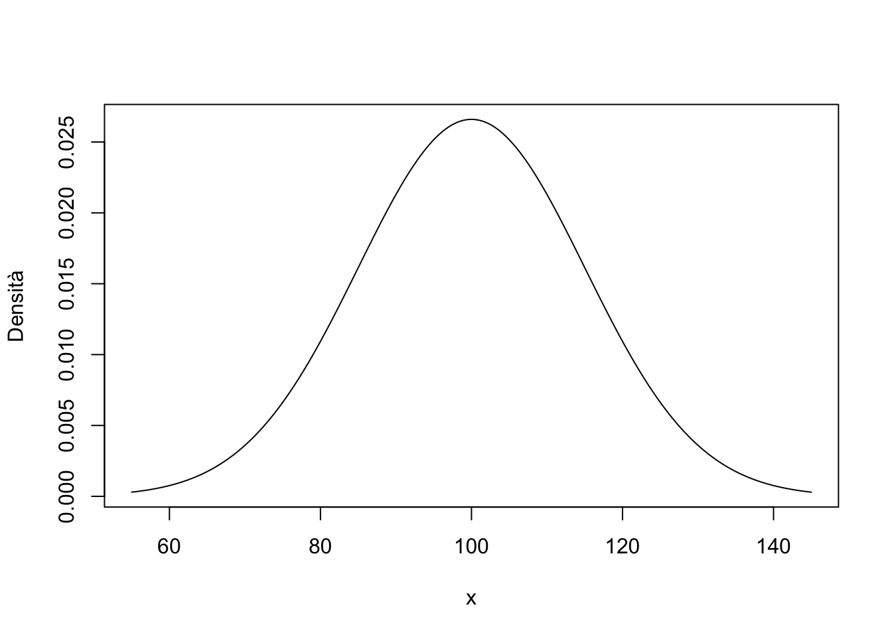
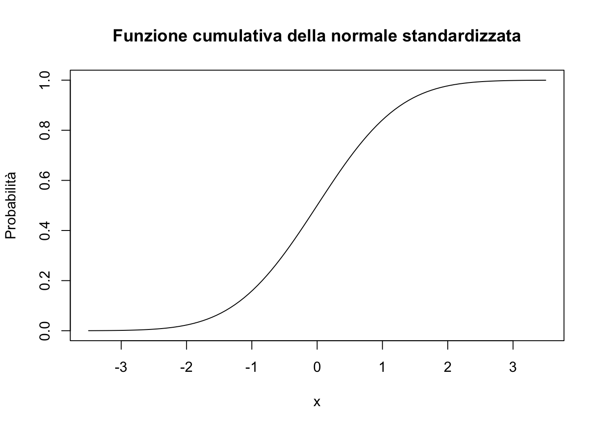

── Attaching core tidyverse packages ──────────────────────── tidyverse 2.0.0 ──
✔ dplyr 1.1.4 ✔ readr 2.1.5
✔ forcats 1.0.0 ✔ stringr 1.5.1
✔ ggplot2 3.5.1 ✔ tibble 3.2.1
✔ lubridate 1.9.4 ✔ tidyr 1.3.1
✔ purrr 1.0.2
── Conflicts ────────────────────────────────────────── tidyverse_conflicts() ──
✖ dplyr::filter() masks stats::filter()
✖ dplyr::lag() masks stats::lag()
ℹ Use the conflicted package (<http://conflicted.r-lib.org/>) to force all conflicts to become errors
library("gghighlight")
Funzione gaussiana
Una funzione gaussiana è una funzione della seguente forma: \[
f(x) = \frac{1}{\sigma\sqrt{2\pi}}
\exp\left( -\frac{1}{2}\left(\frac{x-\mu}{\sigma}\right)^{\!2}\,\right)
\] laddove \(\mu\) e \(\sigma\) sono i paramemtri della distribuzione.
L’area è unitaria, per qualsiasi valore \(\mu\) e \(\sigma\):
area <-integrate( gauss, mu =100,sigma =15,lower =-Inf, upper =Inf)$valuearea
[1] 1
area <-integrate( gauss, mu =0,sigma =1,lower =-Inf, upper =Inf)$valuearea
[1] 1
Il fatto che la distribuzione gaussiana dipende dai parametri \(\mu\) e \(\sigma\) significa che, al variare dei parametri, varia la forma della curva di densità: la variazione di \(\mu\) trasla la curva di densità in maniera rigida sull’asse \(\mathbb{R}\); la variazione di \(\sigma\) allarga o appiattisce la curva di densità.
Disegnamo la funzione di densità usando, come parametri, \(\mu\) = 100 e \(\sigma\) = 15 – ovvero, specifichiamo la distribuzione del QI.
mu <-100sigma <-15x <-seq(55, 145, length.out =1e3)plot(x, gauss(x, mu, sigma), type ='l', ylab ="Densità")
Lo stesso risultato si ottene con
plot(x, dnorm(x, 100, 15), type ='l', ylab ="Densità")

La funzione di ripartizione
curve(pnorm(x), xlim =c(-3.5, 3.5), ylab ="Probabilità", main ="Funzione cumulativa della normale standardizzata")

Quantili e densità
Definiamo i seguenti quantili e calcoliamo la densità corrispondente per il caso della normale standardizzata:
quants <-c(-1.96, 0, 1.96)gauss(quants, 0, 1)
[1] 0.05844094 0.39894228 0.05844094
Lo stesso risultato si ottene con
dnorm(quants, 0, 1)
[1] 0.05844094 0.39894228 0.05844094
La probabilità
Calcoliamo ora le probabilità, ovvero le aree. Iniziamo con la probabilità \(P(X < 115)\) per il QI.
In conclusione, la distribuzione gaussiana dipende da due parametri: \(\mu\) e \(\sigma^2\). Tali parametri corrispondono al valore atteso (cioè alla media) e alla varianza (cioè alla dispersione dei valori attorno al massimo della curva) della distribuzione.